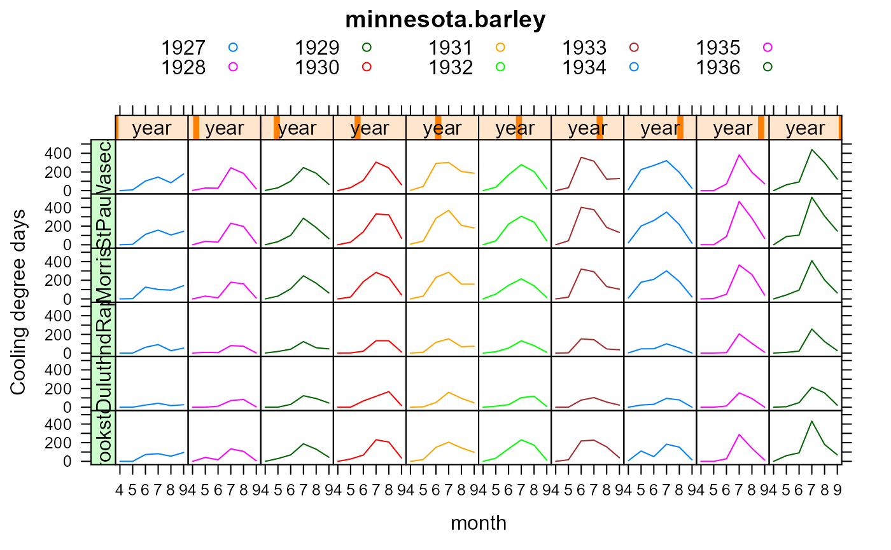
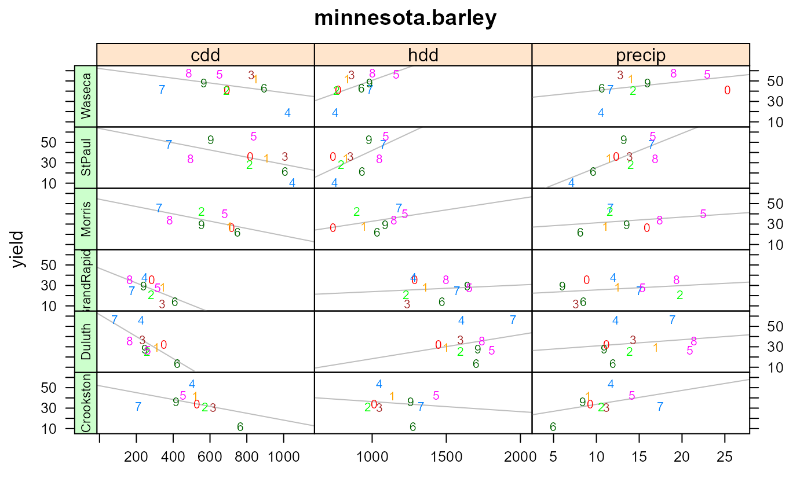

minnesota.barley.weather.RdThis is monthly weather summaries for the 6 sites where barley yield trials were conducted.
A data frame with 719 observations on the following 8 variables.
sitesite, 6 levels
yearyear, 1927-1936
momonth, 1-12, numeric
cddmonthly cooling degree days, Fahrenheit
hddmonthly heating degree days, Fahrenheit
precipmonthly precipitation, inches
minmonthly average daily minimum temp, Fahrenheit
maxmonthly average daily maximum temp, Fahrenheit
When the weather data was extracted from the National Climate Data Center, the following weather stations were chosen, based on availability of weather data in the given time frame (1927-1936) and the proximity to the town (site) for the barley data.
| site | station name | station |
| Morris | MORRIS WC EXPERIMENTAL STATION | USC00215638 |
| StPaul | MINNEAPOLIS WEATHER BUREAU DOWNTOWN | USC00215433 |
| Crookston | CROOKSTON NW EXPERIMENTAL STATION | USC00211891 |
| GrandRapids | GRAND RAPIDS FRS LAB | USC00213303 |
| Waseca | WASECA EXPERIMENTAL STATION | USC00218692 |
| Duluth | SUPERIOR | USC00478349 |
'cdd' are cooling degree days, which is the number of degree days with a temperature _above_ 65 Fahrenheit.
'hdd' are heating degree days, _below_ 65 Fahrenheit.
No data is available for Duluth in Dec, 1931.
National Climate Data Center, https://www.ncdc.noaa.gov/.
Kevin Wright. 2013. Revisiting Immer's Barley Data. The American Statistitician, 67, 129-133. https://doi.org/10.1080/00031305.2013.801783
# \dontrun{ library(agridat) data(minnesota.barley.yield) dat <- minnesota.barley.yield data( minnesota.barley.weather) datw <- minnesota.barley.weather # Weather trends over time libs(latticeExtra) useOuterStrips(xyplot(cdd~mo|year*site, datw, groups=year, main="minnesota.barley", xlab="month", ylab="Cooling degree days", subset=(mo > 3 & mo < 10), scales=list(alternating=FALSE), type='l', auto.key=list(columns=5)))# Total cooling/heating/precip in Apr-Aug for each site/yr ww <- subset(datw, mo>=4 & mo<=8) ww <- aggregate(cbind(cdd,hdd,precip)~site+year, data=ww, sum) # Average yield per each site/env yy <- aggregate(yield~site+year, dat, mean) minn <- merge(ww, yy) # Higher yields generally associated with cooler temps, more precip libs(reshape2) me <- melt(minn, id.var=c('site','year')) mey <- subset(me, variable=="yield") mey <- mey[,c('site','year','value')] names(mey) <- c('site','year','y') mec <- subset(me, variable!="yield") names(mec) <- c('site','year','covar','x') mecy <- merge(mec, mey) mecy$yr <- factor(mecy$year) foo <- xyplot(y~x|covar*site, data=mecy, groups=yr, cex=1, ylim=c(5,65), par.settings=list(superpose.symbol=list(pch=substring(levels(mecy$yr),4))), xlab="", ylab="yield", main="minnesota.barley", panel=function(x,y,...) { panel.lmline(x,y,..., col="gray") panel.superpose(x,y,...) }, scales=list(x=list(relation="free"))) libs(latticeExtra) foo <- useOuterStrips(foo, strip.left = strip.custom(par.strip.text=list(cex=.7))) combineLimits(foo, margin.x=2L) # Use a common x axis for all rows# }